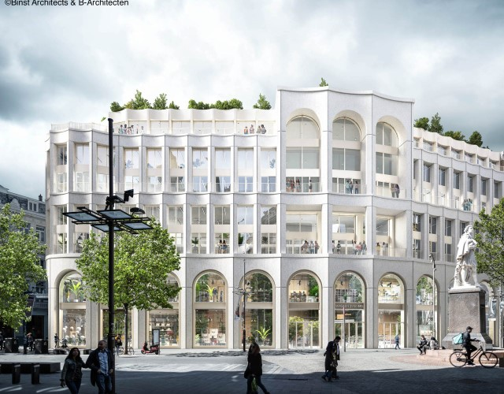
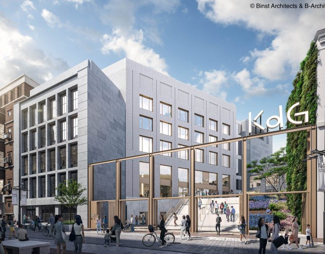
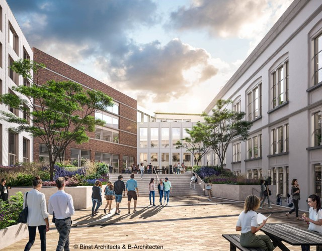
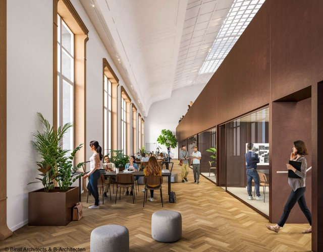

Campus Meir
De nieuwe KdG-campus komt op de plaats van de voormalige Proximus (RTT) site. Het is een gecombineerd project van retailruimte in de onderste 2 verdiepingen.
Tegen het najaar van 2026 verhuizen de studenten en medewerkers van campus Groenplaats naar hun nieuwe campus in het hartje van Antwerpen.
Foto's
   Wat men zegt...
Ik vind het een mooi en innovatief project dat een aangename en inspirerende leeromgeving zal creëren.
Nadia - StudentHet ontwerp is modern, maar past wel goed bij de historische omgeving van de Meir.
Steven - InwonerOp de site bevinden zich een aantal opmerkelijke panden. In ons ontwerp hebben we er dan ook voor gezorgd dat de nieuwe campus wordt gerealiseerd met veel respect voor het bouwkundig erfgoed.
Veerle - KdG